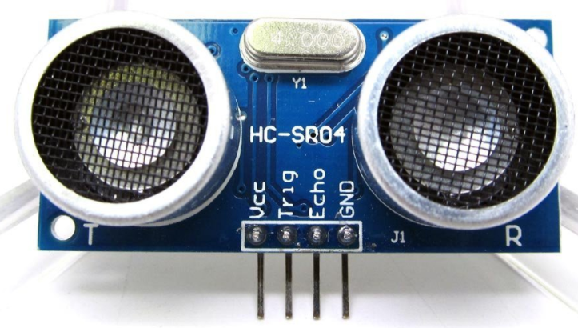
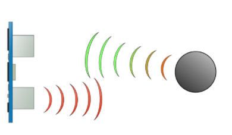
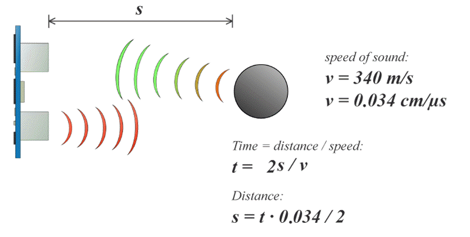
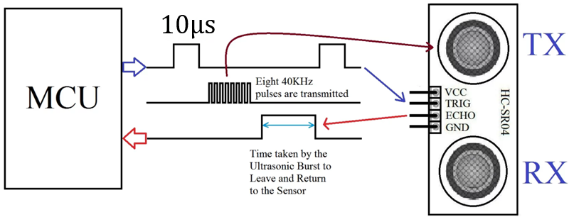
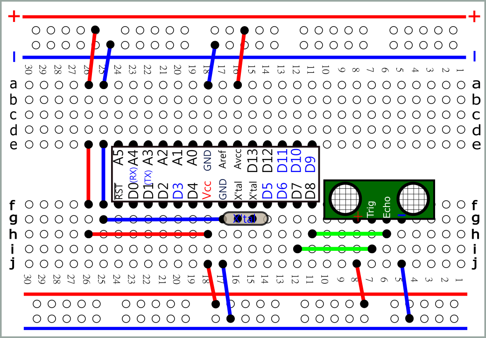
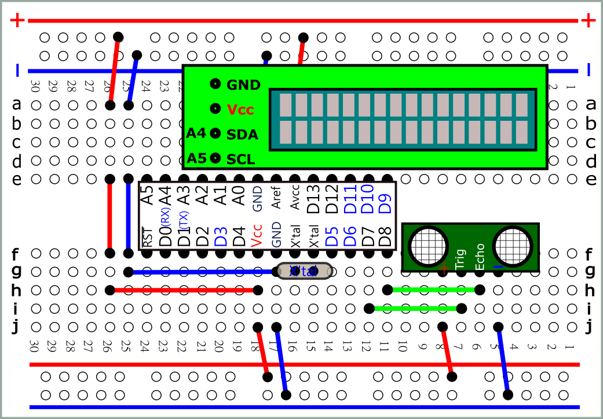
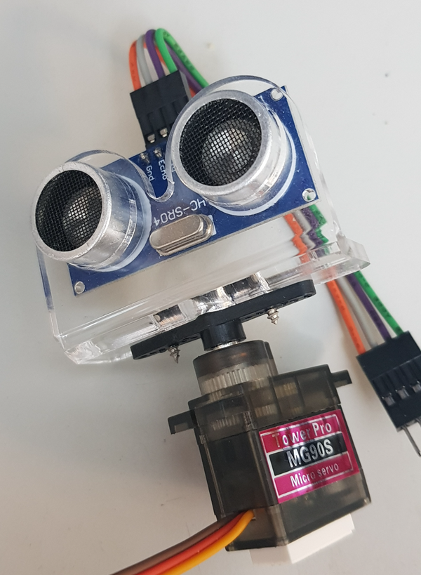
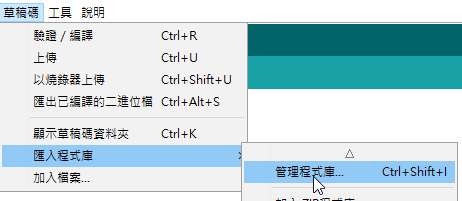
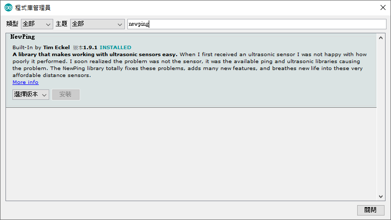

 |
 Range: 2 cm to 3 m |
| 音速(web) |
 |
 |
 svg |
|
pulseIn(pin,
value) Parameterspin: the number of the pin on which you want to read the pulse. (int) value: type of pulse to read: either HIGH or LOW. (int) timeout (optional):
the number of microseconds to wait for the pulse to start; Returnsthe
length of the pulse (in microseconds)
|
| unsigned
long ul; void setup() { Serial.begin(9600); } void loop() { Serial.println(sizeof(ul)); delay(1000); } //4 byte |
#define trigPin 7 #define echoPin 8 unsigned long duration; int distance; void setup() { pinMode(trigPin, OUTPUT); //pinMode(echoPin, INPUT); Serial.begin(9600); } void loop() { // Clears the trigPin digitalWrite(trigPin, LOW); delayMicroseconds(2); // Sets the trigPin on HIGH state for 10 micro seconds digitalWrite(trigPin, HIGH); delayMicroseconds(10); digitalWrite(trigPin, LOW); // Reads the echoPin, //returns the sound wave travel time in microseconds duration = pulseIn(echoPin, HIGH); // Calculating the distance distance= duration*0.034/2; Serial.print("Distance: "); Serial.println(distance); delay(100); } |
 svg |
| Library: LiquidCrystal_I2C.zip |
| #include
<Wire.h> #include <LiquidCrystal_I2C.h> #define trigPin 7 #define echoPin 8 LiquidCrystal_I2C lcd(0x3F,16,2); long unsigned duration; int distance; void setup() { pinMode(trigPin, OUTPUT); //pinMode(echoPin, INPUT); lcd.init(); lcd.backlight(); } void loop() { // Clears the trigPin digitalWrite(trigPin, LOW); delayMicroseconds(2); // Sets the trigPin on HIGH state for 10 micro seconds digitalWrite(trigPin, HIGH); delayMicroseconds(10); digitalWrite(trigPin, LOW); // Reads the echoPin, //returns the sound wave travel time in microseconds duration = pulseIn(echoPin, HIGH); // Calculating the distance distance= duration*0.034/2; lcd.clear(); lcd.setCursor(0,0); lcd.print("Distance:"); lcd.print(distance); delay(100); } |
 |
| //倒車雷達 int buzPin = 7; //declare pin for Buzzer; int trigPin = 8; //declare pin for trigger pin of UltraSonic sensor; int echoPin = 4; //declare pin for echo pin of UltraSonic sensor; float speed = 0.0347; //declare speed of sound in air @ room temp; float dist; //declare variable for containing distance sensed; float pingTime; //declare variable for containing echo time; int buzNear = 20; //declare buzzing time for very close proximity; int buzHigh = 50; //declare buzzing time for close proximity; int buzMid =130; //declare buzzing time for mid proximity; int buzFar = 600; //declare buzzing time for far off object; int delayFar = 260; void setup() { pinMode(buzPin,OUTPUT); //set buzzer & trigger pin as outpin; pinMode(trigPin,OUTPUT); pinMode(echoPin,INPUT); //set echo pin as input; } void loop() { digitalWrite(trigPin,LOW); delayMicroseconds(20); digitalWrite(trigPin,HIGH); delayMicroseconds(10); digitalWrite(trigPin,LOW); //creating a pulse for sensing distance; pingTime = pulseIn(echoPin,HIGH); //read the echoTime, &hence the distance; dist = (speed*pingTime*0.5); if(dist<=10.0){ digitalWrite(buzPin,HIGH); //simple conditional statements changing frequency based upon the distance sensed delay(20); digitalWrite(buzPin,LOW); delay(20); } else if(dist<=30.0 && dist>10.0) { digitalWrite(buzPin,HIGH); delay(buzHigh); digitalWrite(buzPin,LOW); delay(buzHigh); } else if((dist>30.0) && (dist<60.0)) { digitalWrite(buzPin,HIGH); delay(buzMid); digitalWrite(buzPin,LOW); delay(buzMid); } else if(dist>=60.0 && dist<120.0) { digitalWrite(buzPin,HIGH); delay(buzFar); digitalWrite(buzPin,LOW); delay(delayFar); } } |
| 使用NewPing函數庫 |
 
|
| 測試 1 : 測試距離 (公分) #include <NewPing.h> #define TRIGGER_PIN 5 #define ECHO_PIN 6 #define MAX_DISTANCE 200 NewPing sonar(TRIGGER_PIN, ECHO_PIN, MAX_DISTANCE); void setup() { Serial.begin(9600); } void loop() { Serial.print("Ping: "); Serial.print(sonar.ping_cm()); //傳回距離 (公分) Serial.println("cm"); delay(500); } |
| 測試 2 : 測試距離 (公分, 傳回多次偵測回應時間之中數) #include <NewPing.h> #define TRIGGER_PIN 5 #define ECHO_PIN 6 #define MAX_DISTANCE 200 NewPing sonar(TRIGGER_PIN, ECHO_PIN, MAX_DISTANCE); void setup() { Serial.begin(9600); } void loop() { Serial.print("Ping: "); unsigned int us=sonar.ping_median(); //傳回 5 次偵測的回應時間中數 (微秒) Serial.print(sonar.convert_cm(us)); //將回應時間 (微秒) 轉成距離 (公分) Serial.println("cm"); delay(500); } |
| //Example 3 using NewPing timer #include <NewPing.h> #define TRIGGER_PIN 5 #define ECHO_PIN 6 // Maximum sensor distance is rated at 400-500cm. #define MAX_DISTANCE 200 // NewPing setup of pins and maximum distance. NewPing sonar(TRIGGER_PIN, ECHO_PIN, MAX_DISTANCE); /* How frequently are we going to send out a ping (in milliseconds). 50ms would be 20 times a second. */ unsigned int pingSpeed = 50; // Holds the next ping time. unsigned long pingTimer; void setup() { Serial.begin(115200); pingTimer = millis(); // Start now. } void loop() { /* Notice how there's no delays in this sketch to allow you to do other processing in-line while doing distance pings. */ if (millis() >= pingTimer) { pingTimer += pingSpeed; // Set the next ping time. sonar.ping_timer(echoCheck); } // Do other stuff here, really. Think of it as multi-tasking. } void echoCheck() { /* Timer2 interrupt calls this function every 24uS where you can check the ping status. */ // Don't do anything here! if (sonar.check_timer()) { /* This is how you check to see if the ping was received.*/ // Here's where you can add code. Serial.print("Ping: "); /* Ping returned, uS result in ping_result, convert to cm with US_ROUNDTRIP_CM. */ Serial.print(sonar.ping_result / US_ROUNDTRIP_CM); Serial.println("cm"); } // Don't do anything here! } |